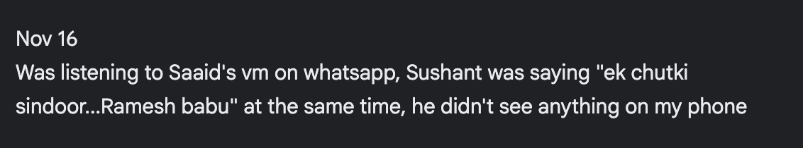
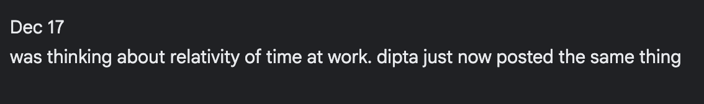
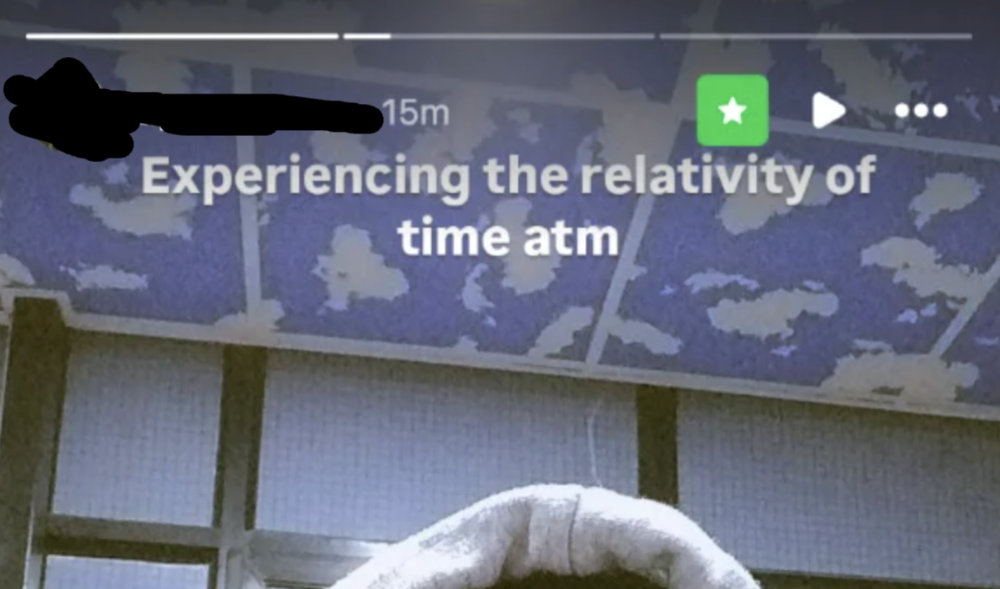

All my life I have been bewildered (and sometimes haunted) by the occasional simultaneity of two events that have no business being together.
These events seem impossibly aligned in time and individual experience yet common enough to intrigue nearly everyone at some point. They feel like cosmic pranks being played on us by beings from higher realms. From a rationalist perspective, it's one of the few statistical wonders (like Bell Curve or Survivor Effect) whose mystery fades away by simply attaching a -"bias" suffix to the end of the explanation. Yet its other-worldly allure feels so magical when experienced firsthand that the thirst of wonder it induces can never be quenched with mere statistical explanations. The wonder sticks; the mystery remains.
Oct 2023
October of 2023, I started paying attention to and documenting synchronicities whenever they happened. I wasn't always consistent and I skipped logging a fair number of them because I was lazy or overwhelmed or distracted more times than I'd care to admit. As often happens with my short-lived diligence, I stopped altogether after December of 2024.
Through this blog entry, I am putting my logs out there.
Note: I'm not trying to explain these events or attribute supernatural significance to them. They're simply personal observations I've recorded and found interesting enough to share.
(Some names have been altered for the author's attempt at social acceptance and to not be labeled a creep)
Synchronicities: Oct 2023 to Dec 2024
midOct 2023
I didn't note the date when I logged this. Aakriti and Parohi occasionally teamed up on the washing machine as it was easier, cheaper, and logistically possible. One winter day in late 2022, owing to chance alone and nobody's malice, a rogue ballpoint pen had been left in the pocket of one of the clothes. A minor accident; the ink wrecked havoc.
Fast forward to early morning of the day that I logged this in 2023, I was doing my own laundry, which happened to be near the apartment where the aforementioned misfortune had occurred. In the final moments before the dryer completed its cycle, I began daydreaming, like I often do in those moments, about that fateful winter day. Later that very afternoon, I met Parohi and Aakriti in the college cafeteria. They casually tell me about how history had repeated itself. Another ballpoint pen had gone rogue. Another load ruined. Two incidents, a year apart, took place on the same day when I reminisced about it.
Oct 19 2023
The first two took place on October 19; the last was a recollection from my past. It was ENG Short Story -- someone was presenting on some story. The second bullet point on the slide read "Dunn Family". Right at that moment, I was bored, like I often am, and decided to check my email, like I often do. The email on top, the subject of which I have forgotten now, mentioned a certain Robert Dunn.
Second was not as intriguing as the first given that Kirupam Nanal and I talked (*when we did talk*) mostly about writers and poets. But nevertheless, I had finished reading Tolstoy's *Confessions* that day at Kirupam's recommendation from couple of years ago ( *I am often late but never dismissive about recommendations* ). I open a certain social messaging app and see that Kirupam (*with whom I hadnt talked in eons*) had texted me something, the contents of which I have forgotten, but yet again mentioning Tolstoy. I tried thinking about threads that I may have missed that could cause such a synchronicity but I found none.
Third was a memory that resurfaced on that same day about when in school a certain someone, whom I used to call often on the phone, had gotten a new phone number. That phone number differed from mine by only ONE SINGLE DIGIT. 9 of the 10 digits were the same. Only one digit -- third from the last -- was 3 more than what mine was at that position.
Oct 21 2023
On Oct 20, I was playing with stable diffusion when Shohit Marma sent me a selfie. I tried to do make something psychedelic out of it and ended up making this:

Then on Oct 21, I was watching a new Veritasium video, uploaded the same day ( the day after I made that pic of Shohit) titled How One Line in the Oldest Math Text Hinted at Hidden Universes which had this frame at 9:28

Oct 27 2023

It was at Court Square station's escalator to the 7 line that I had taken this video ( I found the straight lines leading perfectly to the bottom of the escalator very pretty ):

Two days later, a twitter account I was following, "images that could be album covers", posts this pic:
Nov 1 2023
Self explanatory.
Nov 4 2023

Less than three weeks into consciously recording synchronicities, my sister asks me an unrelated question about synchronicities. A meta-synchronicity.
Nov 16 2023

Sushant said it before the player reached the point in the message where Saaid said it. Also, "Ramesh" is an alias Saaid uses.
Nov 22 2023
On a rational side note: maybe Dhreeya Shakal talked to Saaid after that call and may have actively or subconsciously repeated the song which led Saaid to pick it up. But at the moment it was spooky.
Mar 23 2024
I dont remember exactly what this was about. I do remember that by "the lamp", I was referring to that one reddit post about the guy who was unconscious and in his dreams lived a different life for years before he saw a distorted lamp which brought him back to reality
I also somewhat remember that it was an overwhelming synchronicity and I couldn't write more about it because I was in shock.
Jul 2 2024
The second imagination could have very well been reality masked as hypnogogic hallucination but I remember thinking the same thing that very day and concluding that it wasn't because I had been alert for quite some time before the second imagination.
Dec 17 2023

The TV had something on about Einstein. Opened instagram to see that Apta Dacharya posted this story:

Honorable mention ( from 2022)
Moved to a certain city seven heavens away from home, where my social graph was essentially empty. Knew one single person (knew is an overstatement here but works for the story) who lived three sizable cities north. A brief thought of him surfaced on day one. Second day, I go to a certain famous bridge on my own. That person happens to walk past me. Was shook. A glitch. Had to talk to him to check if it was really him. It was.
Why post this?
Truthfully, I don't have a point here. I'm simply placing down these improbable breadcrumbs because I find them interesting enough to document and showcase.
The only takeaway from this post is check your pockets before laundry.